Corners, walls and prices
In 1938 the laboratory of the Leningrad Plywood Trust brought a question to the university's mathematicians. The Trust peeled logs into veneer on several kinds of machine, and each machine handled each kind of log at its own speed. The plan fixed the mix of products. How should the work be shared out so the machines turned out as much as possible?
The man they asked was Leonid Kantorovich, 26 and already a professor. He saw that the question was easy to state and awkward to answer. The possible plans form a many-sided shape, the best plan sits at one of its corners, and the standard advice was to work out the value at every corner and compare. That advice, he wrote later, "lost its force since the vertices number was enormous even in very simple problems."
So he stopped looking at corners. He looked for one number per resource, an exchange rate between machine time and output, that would prove a plan was best without comparing it to anything else. He called them resolving multipliers. They are the prices this guide keeps coming back to. Soviet officials attacked the work soon after it appeared; Anatoly Vershik, who studied under him, wrote that it threatened to bury its author "in the most direct sense".
Our mill is smaller than his. It makes two kinds of sheet, 3-ply and 5-ply, from 32 hours of lathe time and 20 hours of press time. The figures are ours, chosen so the arithmetic fits in your head; the question is his. Give it thousands of rows instead of two and it is an airline's crew schedule or a refinery's daily blend.
This guide follows the first eight chapters of Craig Tovey's Linear Optimization and Duality, with that one mill almost the whole way through. Every number on the page is computed in exact fractions by the code beside it, and a test fails if the prose and the code disagree.
0What this is
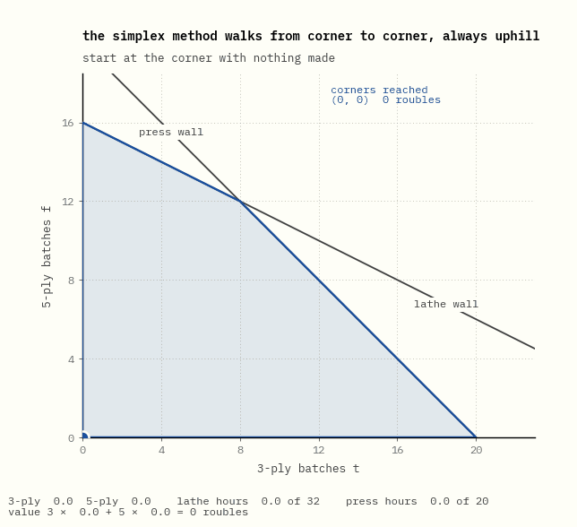
That walk is the simplex method. George Dantzig devised it in 1947 while planning for the US Air Force, knowing nothing of Kantorovich. It starts at a corner of the shape, moves along an edge to a neighbouring corner worth more, and stops when no neighbour is better. Here it takes two steps: from nothing made, to all 5-ply, to 8 batches of 3-ply and 12 of 5-ply.
Stopping there is a claim, not an observation. The walk compares a corner only with its neighbours, never with plans further away. That a corner which beats its neighbours beats every plan is a theorem, proved for this mill in chapter 2 and in general in chapter 14.
Dantzig did not expect it to work. He pictured it as the animation draws it, crawling round the outside of the shape when a path through the middle looked shorter, and he set it aside. He tested it only after other people's methods had done badly. It was fast, and it has been a workhorse of the subject ever since.
Watch the readout under the picture. In step 1 the lathe hours climb to 32 and stop climbing: the dot has hit the lathe wall. In step 2 the lathe stays at 32 while the press hours climb to 20: the dot slides along the lathe wall until it hits the press wall as well. Each step ends when one more resource runs out.
Getting there takes a few ideas, and each chapter adds one:
- Chapters 1 to 7 set the problem up: what the shape is, why the answer sits on a corner, how to turn a story into a problem, where linear programs stop and yes-or-no decisions begin, and Kantorovich's multipliers, the second problem hiding behind every linear program.
- Chapters 8 to 13 are about the shape itself: walls, corners, and what goes wrong when too many walls meet at one point.
- Chapters 14 to 20 are Dantzig's walk: the table that does its bookkeeping, how it avoids walking in circles, how it finds somewhere to start, and the walks that start from the prices instead.
- Chapters 21 to 23 come back to the multipliers: why they are right, how far they can be trusted, and how the big theorems fit together. In 1975 Kantorovich shared the Nobel prize in economics with Tjalling Koopmans, not with Dantzig.
Each idea comes as a picture first and a sentence second. The glossary at the end gives the textbook name for every plain word used here.
1A plan inside the walls
By the end of this page you will be able to look at one row of a linear program, such as 1 × t + 2 × f ≤ 32, and see an arrow, a wall at right angles to it, and which side of the wall is allowed.
The mill makes two kinds of sheet in batches. Each batch uses lathe and press hours, and has a fixed value:
| lathe | press | value | |
|---|---|---|---|
| one batch of 3-ply | 1 hour | 1 hour | 3,000 roubles |
| one batch of 5-ply | 2 hours | 1 hour | 5,000 roubles |
| the mill has | 32 hours | 20 hours |
A plan is two numbers: t batches of 3-ply and f batches of 5-ply. So every plan is a point on a sheet of paper, with 3-ply across and 5-ply up.
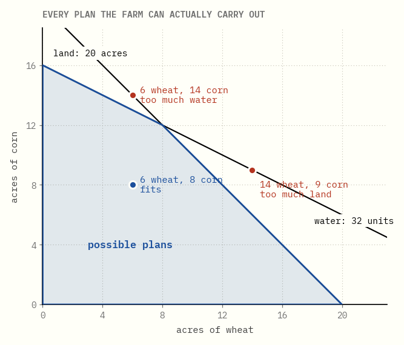
Each resource draws one straight line. Below the lathe line are the plans that use at most 32 lathe hours; on the line itself the lathe time runs out exactly. The same goes for the press. Making a negative number of batches is not allowed, so the two axes are walls as well. The shaded region is what is left: every plan the mill can actually carry out.
Take 6 batches of 3-ply and 14 of 5-ply. That uses 20 press hours, all the press time there is, which is fine. It also needs 6 + 28 = 34 lathe hours, two more than the mill has. The point lies just past the lathe line, and that is the whole check. The rest of this page explains why the line is straight, why it sits where it does, and why the allowed side is the origin's side.
One row is a dot product
A plan of t batches of 3-ply and f batches of 5-ply uses 1 × t + 2 × f lathe hours. Put the lathe time each sheet needs per batch into an arrow a = (1, 2), and the plan into an arrow x = (t, f). Multiplying matching entries and adding is the dot product, written a·x. Every row of a linear program is one dot product, and its arrow is the row of numbers in front of the variables.
The dot product has a second meaning, and it is the picture behind every wall. If θ is the angle between the two arrows, a·x = |a| |x| cos θ. The part |x| cos θ is the length of x's shadow on a: drop a line from the tip of x at right angles onto the line through a, and measure from the origin to where it lands.
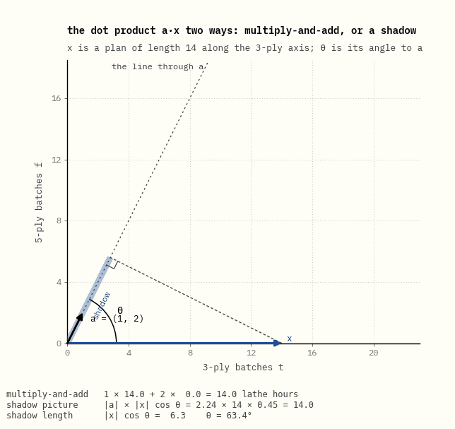
Watch the two readouts under the picture.
- They agree in every frame. Multiply-and-add is the arithmetic, and length × length × cos θ is the same number seen as a picture.
- x never changes length, yet the lathe time it needs runs from 14.0 up to 31.3 and back down to 28.0. Its direction alone decides that.
- The shadow is longest, all 14 of x, when x points straight along a. Then θ = 0 and cos θ = 1.
So a·x = |a| × (the shadow of x on a). Since |a| = √5 never changes, the lathe time a plan uses is its shadow on a, times √5.
Why the two meanings agree
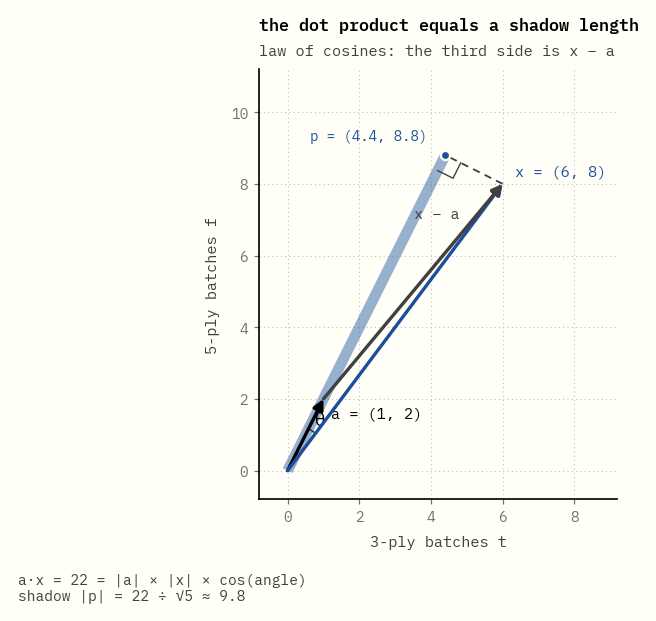
The two meanings are one fact, and the proof is the triangle in the picture. Its sides are a, x, and the arrow x − a from the tip of a to the tip of x.
Proof that a·x = |a| |x| cos θ. The law of cosines for this triangle says
|x − a|² = |a|² + |x|² − 2 |a| |x| cos θ.
The dot product gives the same side another way. Any arrow v has |v|² = v·v, which is Pythagoras: v·v adds up the squares of the entries. A dot product multiplies out like ordinary brackets, so
|x − a|² = (x − a)·(x − a) = x·x − 2 a·x + a·a = |x|² − 2 a·x + |a|².
The two right-hand sides are equal. Cancel |a|² and |x|², divide by −2, and what is left is a·x = |a| |x| cos θ. ∎
The same algebra finds the shadow. The foot of the drop is the point p = s a on the line through a, with s = a·x ÷ |a|². It is the right point because the drop x − p is at right angles to a:
a·(x − p) = a·x − s (a·a) = a·x − (a·x ÷ |a|²) |a|² = 0.
For x = (6, 8), a·x = 22, so p = (22 ÷ 5) × (1, 2) = (4.4, 8.8). The shadow's length is |p| = a·x ÷ |a| = 22 ÷ √5 ≈ 9.8, and that is |x| cos θ = 10 cos θ.
With three sheet types there is still a triangle, lying in the flat sheet through 0, a and x, and the proof is unchanged. With fifty there is no protractor, so the formula is turned round to define the angle: cos θ = a·x ÷ (|a| |x|). That is an honest cosine only if it lies between −1 and 1, and that is the first basic theorem this guide needs.
Theorem (Cauchy–Schwarz). For any two arrows, |a·x| ≤ |a| |x|, with equality exactly when one is a multiple of the other.
Proof. If a = 0 both sides are 0. Otherwise let p = s a be the foot of the drop from x, with s = a·x ÷ |a|² as above. The drop x − p is at right angles to p, so Pythagoras splits x into two perpendicular pieces:
|x|² = |p|² + |x − p|² ≥ |p|² = (a·x)² ÷ |a|².
Multiply by |a|² and take square roots: |a·x| ≤ |a| |x|. Equality needs |x − p| = 0, which means x = s a. ∎
In words: a shadow is never longer than the arrow that casts it. Every time this guide turns a dot product into a distance, this is the step that does it.
A wall is every plan with the same shadow
![The line through a = (1, 2) drawn from the origin. A solid line at right angles to it starts at the origin and slides outwards as the allowed lathe hours b grows from 0 to 40, leaving faint copies at 8, 16, 24, 32 and 40, evenly spaced along a. The side towards the origin is shaded and labelled a·x < b, the far side a·x > b. Three fixed plans report their lathe hours, 22, 32 and 40, and each is labelled more, on the line, or less as the line reaches and passes it. The line comes back to b = 32 and stays there, labelled the lathe wall.](chapters/01-inside-the-walls/levels.gif)
Watch the moving line and the three dots.
- The line never turns. Every line a·x = b is at right angles to a, whatever b is.
- A dot is on the line exactly when b equals the lathe time that plan uses. Before the line reaches it the dot uses more than b; after the line passes it, less.
- The faint copies are evenly spaced: each extra 8 lathe hours moves the line 8 ÷ √5 ≈ 3.6 further along a.
Why at right angles? Two plans on the same line use the same lathe time, so the move d from one to the other has a·d = 0. A dot product is zero only when cos θ = 0, so d is at right angles to a.
That is half of the claim: moves inside the wall are at right angles to a. The other half is that every such move stays inside the wall, so the wall is the whole line and not some smaller set inside it. Take a plan y on the wall and any move d with a·d = 0. Then a·(y + d) = a·y + a·d = 32 + 0 = 32, so y + d is on the wall too. Together: the wall is exactly y plus every move at right angles to a. In the plane those moves are the multiples of (2, −1), a line. With n sheet types, a·d = 0 is one equation in n unknowns, so its solutions fill a flat of n − 1 dimensions. That is a hyperplane.
![The lathe wall and the arrow a = (1, 2), with a tick on the line through a at 32 ÷ √5 = 14.3. Step 1: a plan slides along the wall from all 5-ply to 19 batches of 3-ply and 6.5 of 5-ply; its shadow, the blue bar, stays exactly at the tick and the readout stays at 32 hours. Step 2: the plan steps away from the origin, the bar grows past the tick and turns amber, and the plan is labelled over the lathe hours at 42 hours. Step 3: it steps back inside, the bar shrinks below the tick, and the plan is labelled lathe time to spare.](chapters/01-inside-the-walls/shadow.gif)
Watch the bar and the tick. While the plan stays on the wall the bar does not move, though the plan travels a long way. The bar moves only when the plan moves along a, and the lathe readout moves with it.
So the lathe wall a·x = 32 is every plan whose shadow on a is 32 ÷ √5 ≈ 14.3. It cuts the sheet into two halves: a·x < 32 on the origin's side and a·x > 32 on the far side. The arrow a points towards the side that uses more lathe time: a step s along a changes the lathe hours by a·(s a) = s |a|² = 5s, which is positive for every s > 0.
How far a plan is from a wall
The faint copies in the moving-line animation sit 8 ÷ √5 apart, not 8, and the lathe wall sits 32 ÷ √5 from the origin, not 32. Hours and distances are different units, and |a| converts one into the other.
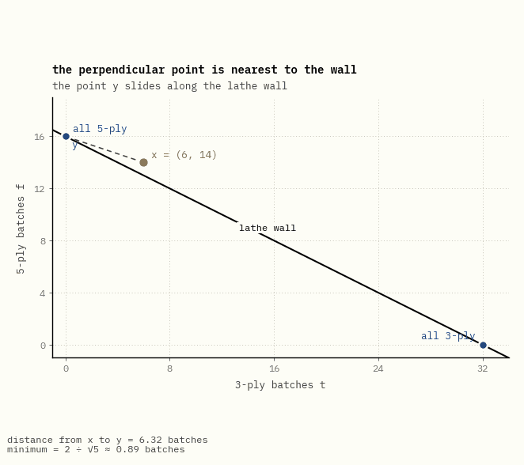
Theorem (distance to a wall). Let g = a·x − b be how far a plan x is over the wall a·y = b, counted in hours. The point of the wall nearest to x is x − (g ÷ |a|²) a, and the distance is |g| ÷ |a|.
Proof. The point y* = x − (g ÷ |a|²) a is on the wall, since a·y* = a·x − (g ÷ |a|²)(a·a) = a·x − g = b. Its distance from x is |g| |a| ÷ |a|² = |g| ÷ |a|. Any point y of the wall has a·(x − y) = a·x − b = g, so Cauchy–Schwarz gives |g| ≤ |a| |x − y|, that is |x − y| ≥ |g| ÷ |a|. No point of the wall is closer than y*. ∎
For x = (6, 14): g = 34 − 32 = 2 hours, the nearest point of the wall is (6, 14) − (2 ÷ 5) × (1, 2) = (5.6, 13.2), and the distance is 2 ÷ √5 ≈ 0.89.
The proof says more than the formula. A step of length r changes the lathe hours by a·(step), which is at most |a| r by Cauchy–Schwarz, and exactly |a| r when the step points along a. So |a| = √5 is the most lathe time one unit of distance can add, and a is the direction that adds it fastest. That is why 8 extra hours move the line 8 ÷ √5 along a, and why 32 hours put the wall 32 ÷ √5 from the origin.
The press is the same with the arrow (1, 1), and its wall sits where the shadow is 20 ÷ √2 ≈ 14.1. More sheet types change only the number of entries in the arrows. With three products, a·x = 32 is a flat plane at right angles to a; with any number of products it is called a hyperplane, and each side of it a half-space. The region of possible plans is where all the half-spaces overlap.
The walls are flat because of two assumptions. A second batch of 5-ply uses exactly as much lathe time as the first, and the hours used by the two sheet types simply add up. Problems with those two properties are called linear programs. If later 5-ply batches needed less lathe time than earlier ones, the lathe line would bend, and the methods in this guide would no longer apply as they stand.
Dantzig first presented the idea to the Econometric Society in Madison, in September 1948. When he finished, Harold Hotelling, a prominent statistician, stood up: "But we all know the world is nonlinear." John von Neumann answered on Dantzig's behalf. The speaker had called his talk linear programming and carefully stated his axioms. "If you have an application that satisfies the axioms, well use it. If it does not, then don't." The two assumptions above are those axioms. Our mill satisfies them by construction. A real one satisfies them roughly, and much of the craft is knowing when roughly is enough.
Two facts about the whole region
Count the axes as rows too: t ≥ 0 is −t ≤ 0, with arrow (−1, 0), and f ≥ 0 is −f ≤ 0, with arrow (0, −1). Then the region is the set of plans x with a·x ≤ b for each of its four rows. A set cut out by finitely many rows like this is a polyhedron. Two facts about polyhedra carry the next chapter.
Convex: the segment between two plans is made of plans.
Proposition. If x and y are in a polyhedron, so is every point (1 − s) x + s y with 0 ≤ s ≤ 1.
Proof. For each row, a·((1 − s) x + s y) = (1 − s)(a·x) + s (a·y) ≤ (1 − s) b + s b = b. The step that keeps ≤ multiplies a·x ≤ b by 1 − s and a·y ≤ b by s, which is allowed because neither weight is negative. ∎
For example, halfway between 6 batches of 3-ply and 8 of 5-ply, and 8 and 12, is the plan (7, 10). It uses 27 lathe hours and 17 press hours, so it is a plan, as promised.
Closed: the region includes its own edge. A plan on the lathe wall uses exactly 32 hours, which is allowed. The precise way to say "includes its edge" is that the outside is open: every point outside has a small disc around it that lies entirely outside.
![A close-up of the lathe wall near the plan x = (6, 14), which is 2 lathe hours over. Step 1 draws a disc of radius 2 around x, the excess in hours: it crosses the wall, and the part inside the region is shaded amber. Step 2 shrinks the disc to radius 2 ÷ √5 ≈ 0.89, the true distance: it touches the wall at (5.6, 13.2), which uses exactly 32 hours. Step 3 shrinks it to half that, 1 ÷ √5 ≈ 0.45, and a probe runs round its edge with a readout of the lathe hours it uses, which never falls below 33. The final frame reads: every point of the disc is over the lathe hours, so the outside is open.](chapters/01-inside-the-walls/ball.gif)
Proposition. Every polyhedron is closed.
Proof. Take a point x outside. It breaks at least one row: a·x > b. Let ε = a·x − b > 0 be how far over it is, in hours, and let r = ε ÷ (2 |a|). Every point of the disc of radius r around x is x + r d for some d with |d| ≤ 1. By Cauchy–Schwarz, a·d ≥ −|a| |d| ≥ −|a|, so
a·(x + r d) = a·x + r (a·d) ≥ a·x − r |a| = b + ε − ε ÷ 2 = b + ε ÷ 2 > b.
Every point of the disc breaks the same row, so the whole disc is outside. The outside is open, which is what closed means. ∎
Each piece of r is there for a reason, and the animation shows what goes wrong without it.
- Why divide by |a|. ε is an excess in hours, and a radius is a distance. A step of length r can cut the lathe hours by up to |a| r, and cuts them by exactly that when it points straight back at the wall. So the excess is used up after a distance ε ÷ |a|, the distance to the wall from the theorem above. Using ε itself as the radius treats hours as distance and is too big by the factor |a|. For x = (6, 14), a disc of radius 2 reaches plans using 34 − 2√5 ≈ 29.5 hours, well inside the wall.
- Why the 2. Any radius below ε ÷ |a| works, and halving is the simplest choice that leaves room. At exactly ε ÷ |a| the disc touches the wall at (5.6, 13.2), which is a plan, so the closed disc is no longer outside. The 2 leaves a margin of ε ÷ 2 hours: at radius 1 ÷ √5 the worst point of the disc uses 34 − 1 = 33 hours.
- Why one row is enough. x only has to break one row to be outside, and the disc only has to keep breaking that same row. The other rows play no part.
Closed, together with bounded, is what guarantees in chapter 2 that a best plan exists at all.
The one thing to remember. A row a·x ≤ b measures each plan's shadow on the arrow a; the plans with shadow exactly b ÷ |a| form a wall at right angles to a, and the allowed side is the side a points away from.
2The best plan sits on a corner
By the end of this page you will see why, whenever a best plan exists, a corner is one of them, and you will have a proof that 8 batches of 3-ply and 12 of 5-ply are best which checks no other corner.
A batch of 5-ply is worth 5,000 roubles, more than the 3,000 roubles for 3-ply. The obvious plan is to make as much 5-ply as possible. A batch of 5-ply needs 2 lathe hours, so the lathe is gone after 16 batches of 5-ply. That plan is worth 80,000 roubles and leaves 4 press hours unused.
It is not the best plan. Swap one batch of 5-ply for two batches of 3-ply: the lathe time stays the same, the press time used goes up by one hour, and the value goes up by 1,000 roubles. Keep swapping until the press time runs out, and the mill reaches 8 batches of 3-ply and 12 of 5-ply, worth 84,000 roubles.
Value is a dot product too
Value is 3 × t + 5 × f, which is c·x for the value arrow c = (3, 5). Everything chapter 1 showed for the lathe arrow holds for c. Plans with the same value have the same shadow on c, so they lie on one line at right angles to c, and more value means a longer shadow along c.

Watch the dark part of the region.
- At 80,000 roubles all 5-ply is on the line, but the dark strip beyond the line is still part of the region. Those plans have more value, so all 5-ply is not best.
- The dark part shrinks as the line moves out, and it disappears at the last point the line touches. That point is the best plan.
- The last point is a corner. The picture suggests why: a straight line leaving a region with straight edges leaves at a corner or along an edge. A picture is not a proof, and the next three sections give one.
There is a best plan
The sweep took for granted that there is a last point to stop at. Some regions have none.
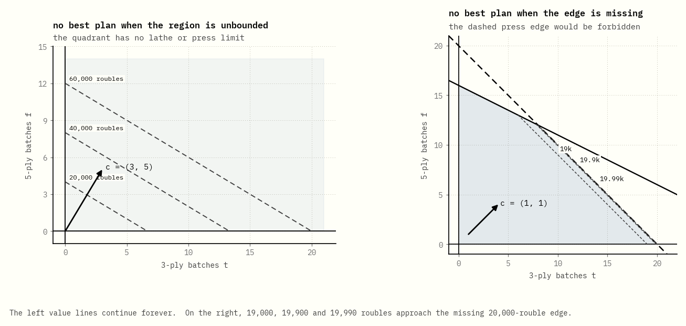
The left region is not bounded: 3t + 5f grows without end and every plan is beaten by another. The right region is not closed. With value t + f, which is just the press hours, every plan is worth less than 20,000 roubles and plans come as close to 20,000 as you like, but none is worth 20,000. Chapter 1's proposition that every polyhedron is closed is what rules this out.
The proof needs two lemmas, and one fact about the real numbers that is assumed rather than proved: completeness. Every set of real numbers with an upper bound has a least upper bound, a number with nothing in the set above it and members of the set as close below it as you like. It is what keeps holes such as √2 out of the number line, and it is the only thing taken on trust in this guide.
![The square 0 ≤ t, f ≤ 20 holding the first 5,000 points of a sequence that never settles, x_k = (10 + 9.5 cos k, 10 + 9.5 sin 1.7k). Each step cuts the kept square into four and keeps the quarter holding the most points, drawn in blue, as a stand-in for "infinitely many"; the other three fade. After five cuts the kept square has side 20 ÷ 32 = 0.625. One point is picked from each kept square, each later in the sequence than the one before, and the picked points, joined in order, close in on a single point. The final frame reads: a bounded sequence has a convergent subsequence.](chapters/02-best-is-a-corner/squeeze.gif)
Lemma (Bolzano–Weierstrass). Every sequence of points in a bounded region has a subsequence that converges.
Proof. Put the region inside a square; for the mill, 0 ≤ t, f ≤ 20. Cut the square into four quarters. The sequence has infinitely many terms and four quarters cannot each hold only finitely many of them, so some quarter holds infinitely many; keep it. Cut that quarter into four and keep a piece holding infinitely many terms, and so on. The k-th kept square has side 20 ÷ 2^k. Now pick one term from each kept square, each later in the sequence than the last pick; this is possible because every kept square holds infinitely many terms. These picks are the subsequence.
Each kept square lies inside the one before, so the left edges never move left, and no left edge passes any right edge. By completeness the left edges have a least upper bound t*, and it lies between the left and right edge of every kept square. The bottom edges give f* the same way. So the point x* = (t*, f*) is in every kept square. Every pick from step k on lies in the k-th square, which also holds x*, so it is within √2 × 20 ÷ 2^k of x*. That shrinks to 0, so the picks converge to x*. In n dimensions, cut a cube into 2ⁿ pieces instead of four; nothing else changes. ∎
Lemma (a closed set keeps its limits). If points of a closed set converge to x*, then x* is in the set.
Proof. Suppose x* is outside. The outside is open, so some disc of radius r > 0 around x* is entirely outside. Convergence means every term from some point on is within r of x*, so inside that disc and outside the set. But every term is in the set. ∎
Theorem (Weierstrass). A continuous function on a closed, bounded set has a largest value on it.
Proof. Let M be the least upper bound of the values, which completeness provides if they are bounded above; otherwise write M = ∞ for now. Pick points x1, x2, x3, … in the set whose values climb towards M: the k-th worth more than M − 1/k, or more than k if M = ∞. The points stay inside a bounded set, so by Bolzano–Weierstrass some subsequence converges to a point x*. The set is closed, so x* is in it, by the second lemma. The function is continuous, so the values along the subsequence converge to the value at x*; they also converge to M. So M is finite and is reached at x*. ∎
For the mill each condition takes one line.
- Closed: the region is a polyhedron (chapter 1).
- Bounded: every plan has t ≥ 0, f ≥ 0 and t + f ≤ 20, so its length √(t² + f²) is at most t + f ≤ 20.
- Continuous: two plans x and y differ in value by |c·x − c·y| = |c·(x − y)| ≤ |c| |x − y| = √34 |x − y|, by Cauchy–Schwarz. Nearby plans have nearby values.
So the mill has a best plan. Weierstrass says nothing about where it is; the next two sections do.
What a corner is
So far "corner" has meant a point that looks pointed. The definition that proofs can use:
Definition. A corner of the region is a plan that is not the midpoint of two different plans.
(4, 14) is not a corner: it is halfway between all 5-ply, (0, 16), and (8, 12), both plans, along the lathe wall. (8, 12) is a corner, because of its two tight walls. Suppose (8, 12) were the midpoint of plans x and y. Both use at most 32 lathe hours and their average uses exactly 32, so both use exactly 32. The same goes for the press: both use exactly 20. But t + 2f = 32 and t + f = 20 have only one solution, (8, 12) itself, so x = y = (8, 12).
That argument works at any plan where two walls with non-parallel arrows are tight: the two equations pin the plan down, so it cannot be the middle of anything. The next proof needs the other direction.
Lemma. If a plan x is not a corner, some move d ≠ 0 keeps every wall that is tight at x tight: a·d = 0 for each such row.
Proof. x is the midpoint of two different plans, x + d and x − d, so d ≠ 0. For a row tight at x, a·x = b, so a·(x + d) ≤ b and a·(x − d) ≤ b say a·d ≤ 0 and −a·d ≤ 0. So a·d = 0. ∎
Some corner is best
![The mill with value arrow c = (1, 1), whose lines of equal value lie along the press wall, so every plan on the press edge is worth 20,000 roubles. A best plan x* = (14, 6) sits in the middle of that edge, where only the press wall is tight. Step 1 draws the move d = (1, −1) along the edge both ways, with readouts: press change 0, value change 0. Step 2 slides the plan one way: the lathe hours climb from 26 to 32 while the value stays at 20,000 roubles, and it stops at (8, 12), where the lathe wall is tight too. Step 3 slides the other way to (20, 0), where the axis f = 0 becomes tight. The final frame reads: a best plan that is not a corner slides, without losing value, to one that is.](chapters/02-best-is-a-corner/slide.gif)
Theorem. If the mill has a best plan, some corner is a best plan.
Proof. Let x* be a best plan. If it is a corner there is nothing to do. If not, the lemma gives a move d ≠ 0 with a·d = 0 for every row tight at x*.
The value does not change along d. The rows that are not tight at x* have hours to spare, so for a small enough step s > 0 both x* + s d and x* − s d are still plans (how small is worked out below). Neither is worth more than x*, so s (c·d) ≤ 0 and −s (c·d) ≤ 0. So c·d = 0: every plan on the line through x* along d is worth exactly as much as x*.
Slide until a new wall is tight. One entry of d is not zero, and moving along d or along −d makes that entry fall. t and f cannot go below 0, so sliding one way or the other some wall is reached. Stop at the first one. The plan there is still best, and it has a new tight wall. Its arrow a′ has a′·d ≠ 0, since sliding along d is what made it tight, while every arrow that was tight before has a·d = 0. So the new arrow is not parallel to any old one.
Repeat. In the plane, two tight walls with non-parallel arrows make a corner, so at most two slides end at a corner worth as much as x*. With n sheet types it takes at most n slides. ∎
How small a step is small enough comes straight from chapter 1. A row with σ hours to spare at x* is σ ÷ |a| from its wall, by the distance theorem, and the step s d covers a distance s |d|. So any s up to σ ÷ (|a| |d|) is safe for that row. That is the closedness proof run the other way, inside instead of outside.
Weierstrass gave the mill a best plan, and this theorem puts one at a corner.
Finding the corners
A corner has two tight walls with non-parallel arrows, so every corner is a crossing point of two of the four walls: lathe, press, t = 0 and f = 0. No two of their arrows are parallel, so each of the 4 × 3 ÷ 2 = 6 pairs crosses exactly once. Not every crossing is a plan.
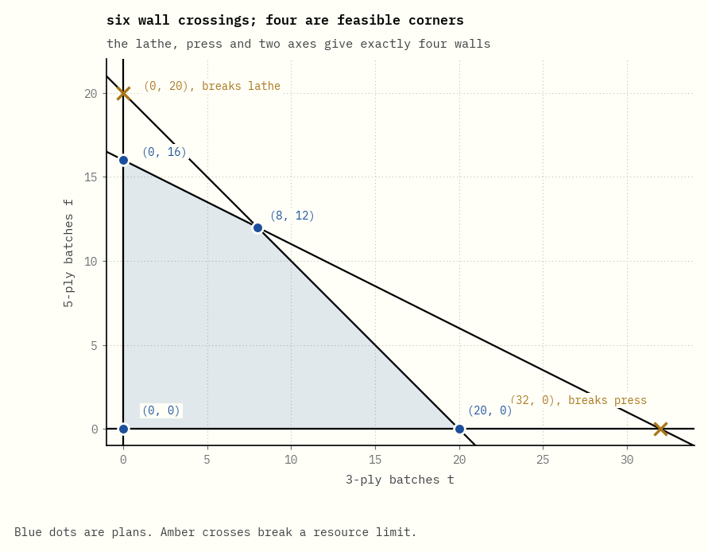
| walls that cross | t | f | lathe hours | press hours | a plan? |
|---|---|---|---|---|---|
| lathe and press | 8 | 12 | 32 | 20 | yes |
| lathe and f = 0 | 32 | 0 | 32 | 32 | no, too many press hours |
| lathe and t = 0 | 0 | 16 | 32 | 16 | yes |
| press and f = 0 | 20 | 0 | 20 | 20 | yes |
| press and t = 0 | 0 | 20 | 40 | 20 | no, too many lathe hours |
| t = 0 and f = 0 | 0 | 0 | 0 | 0 | yes |
The four crossings that are plans are the four corners, and by the theorem one of them is best:
| corner | 3-ply batches t | 5-ply batches f | value |
|---|---|---|---|
| nothing made | 0 | 0 | 0 roubles |
| all 3-ply | 20 | 0 | 60,000 roubles |
| all 5-ply | 0 | 16 | 80,000 roubles |
| both walls at once | 8 | 12 | 84,000 roubles |
So the question "which of infinitely many plans is best?" becomes "which of four corners is best?". The count grows fast. With 50 sheet types and 100 walls, a crossing point is a choice of 50 walls out of 100, and there are up to C(100, 50) ≈ 1.01 × 10²⁹ of them to try. That is what the simplex method in chapter 14 is for.
How large is too large showed up early. In the autumn of 1947 Jack Laderman at the National Bureau of Standards tried the new method on George Stigler's diet problem: the cheapest mix of 77 foods that meets nine nutritional needs. Nine clerks with hand-operated desk calculators took about 120 working days between them. The answer, $39.69 a year at 1939 prices, beat Stigler's own careful guess by 24 cents.
A proof that checks no other corner
At 8 batches of 3-ply and 12 of 5-ply the lathe and press hours are both used up. Take any other plan x and the move d = x − (8, 12) that gets there. The move cannot use extra lathe time, since there is none, so (1, 2)·d ≤ 0; for the same reason (1, 1)·d ≤ 0. The question is what that says about the value.
![A close-up of the corner with 8 batches of 3-ply and 12 of 5-ply, where the lathe and press walls cross. Step 1 grows the arrow 2 × (1, 2) from the corner; step 2 adds 1 × (1, 1) from its tip; step 3 shows the value arrow c = (3, 5) ending at exactly the same point. Step 4 swings a move d through every direction that stays in the region, from along the lathe wall to along the press wall, while the readout gives the extra lathe hours (1, 2)·d, the extra press hours (1, 1)·d, and the extra value 2 × lathe + 1 × press, which never rises above zero.](chapters/02-best-is-a-corner/why_best.gif)
Steps 1 to 3 show that c = 2 × (1, 2) + 1 × (1, 1). So for any move d, c·d = 2 × ((1, 2)·d) + 1 × ((1, 1)·d). Watch the readout in step 4.
- The extra lathe and press hours are never positive. Every move that stays in the region uses less of at least one and more of neither.
- The extra value comes from those two numbers alone: twice the extra lathe hours plus the extra press hour.
- Along the lathe wall the lathe change is 0 and the value change equals the press change. Along the press wall it is the other way round, with the lathe change counted twice.
Two times something no bigger than zero, plus one times something no bigger than zero, cannot be positive, so no plan has more value than 84,000 roubles. This works because both multipliers, 2 and 1, are positive: in the picture, c points between the two walls' arrows. Those two numbers come back in chapter 6: 2,000 roubles per lathe hour and 1,000 per press hour.
Why positive matters shows at all 5-ply, (0, 16). The tight walls there are the lathe, arrow (1, 2), and the axis t = 0, arrow (−1, 0). The value arrow still splits along them, c = (3, 5) = 2.5 × (1, 2) − 0.5 × (−1, 0), but one multiplier is negative. A move that stays in the region makes (−1, 0)·d ≤ 0, and −0.5 times a negative number is positive, so the argument fails. It fails for a real reason. The move d = (2, −1), two batches of 3-ply for one of 5-ply, changes the lathe hours by 0 and (−1, 0)·d by −2, and gains 2.5 × 0 − 0.5 × (−2) = 1, that is 1,000 roubles. That is the swap from the start of this chapter. A negative multiplier marks the wall to step away from, and t = 0 is the wall the simplex walk in chapter 0 left on its second step.
This is the move Kantorovich made in 1938. He did not line the Trust's best plan up against the others. He found one multiplier per resource that made every alternative visibly worse, and he called them resolving multipliers. The simplex walk of chapter 0 produces the same two numbers at its last corner, as chapter 15 will show.
Turn the arrow and the corner moves
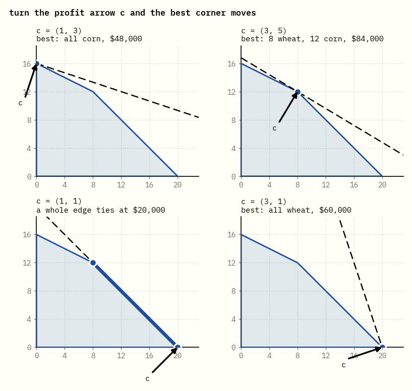
Read the panels left to right, top to bottom: c turns from steep to flat, and the best corner moves the same way, from all 5-ply to all 3-ply. In between, c = (1, 1) is the press wall's own arrow, so the line of equal value lies flat against the press wall and the whole edge ties. The best plans then fill an edge, but its two ends are still corners, so checking corners still finds the best value.
Change what each sheet is worth →
The one thing to remember. The best plan is the point of the region that reaches furthest along the value arrow c; when a best plan exists, one of the corners is best.
3Writing a problem down
The Trust's real question in 1938 was not how to earn the most roubles. Its veneer had to come out in fixed proportions, and what it wanted to know was how to assign logs to its peeling machines so that as much as possible came out in those proportions. Wanting the most of something is not yet a linear program. This chapter is about the step in between: turning a request in words into rows, and the small tricks that make requests which do not look linear come out linear.
From words to rows
Tovey's advice for this step is concrete. Be the person who decides. Then choose variables as if you could only run the mill by text message: once every variable has a number, nobody on the floor has a choice left to make. For the mill, "t = batches of 3-ply to make this week, f = batches of 5-ply" passes. Three tempting choices fail.
- "t = 3-ply." That is a product, not an instruction. Without a unit, "make 8 3-ply" could mean sheets, batches or tonnes.
- "h = lathe hours to use." Incomplete. Knowing that 32 lathe hours will be used does not say what to make with them.
- t, f, and also h = lathe hours used. Redundant. Once t and f are set, h = t + 2f is set too. It is fine to keep h as a name for a quantity, but it is not a decision.
Each rule then becomes a sentence with units on both sides, and the units have to agree as in physics:
| words | lathe hours used | lathe hours there are | |
|---|---|---|---|
| with units | (1 hour per batch) × (t batches) + (2 hours per batch) × (f batches) | ≤ | 32 hours |
| as a row | t + 2f | ≤ | 32 |
The row is linear because of the two facts chapter 1 took on trust: hours grow in proportion to batches, and the hours of the two products add.
One form for every LP
Rows come out of words in every shape: "at least", "exactly", "can be negative", "as cheap as possible". It pays to rewrite all of them into one form, because the prices of chapter 6 and the simplex method of chapter 14 are defined for that form alone.
Proposition (one form). Every linear program can be rewritten as: maximize c·x subject to Ax ≤ b and x ≥ 0, with the same best plans after a change of names.
Proof. Four rewrites cover every case.
- Minimize c·x. A plan x has c·x ≤ c·y for every plan y exactly when −c·x ≥ −c·y for every y, so minimizing c·x and maximizing (−c)·x pick out the same plans.
- a·x ≥ b. Multiplying by −1 reverses an inequality, so this is the same condition as (−a)·x ≤ −b.
- a·x = b. This holds exactly when a·x ≤ b and a·x ≥ b both hold, and the second becomes a ≤ row by the previous rewrite.
- A variable u that may be negative. Replace it by u⁺ − u⁻ with u⁺, u⁻ ≥ 0. Every number is such a difference, since u = max(u, 0) − max(−u, 0), and every such difference is a number, so the plans reachable before and after are the same. ∎
Two of these have a picture. An equality is a wall with no sides: the plan must sit on it, and the two rows a·x ≤ b and a·x ≥ b are the two half-planes whose overlap is the wall. A free variable is split into two arrows that cancel. The split is not unique, because (u⁺ + s, u⁻ + s) gives the same u for every s ≥ 0. When both parts are positive, the point is the midpoint of the two splits with s moved up and down a little, so by chapter 2's definition it is never a corner. At a corner one of u⁺ and u⁻ is zero, and the split is the honest one.
Complete sets: the largest of the smallest
Say the Trust's order comes in sets of one batch of 3-ply and one of 5-ply. Then t batches of 3-ply and f of 5-ply give min(t, f) complete sets, and the goal is to make that as large as possible. min(t, f) is not linear: it has a crease along t = f, where it switches from following t to following f. The trick is one new variable z, the number of sets, with the rows z ≤ t and z ≤ f, and the objective "maximize z".
Theorem (maximizing a minimum). Let g1, …, gk be linear and P a region of plans. The largest value of min(g1(x), …, gk(x)) over P equals the largest z over all pairs (x, z) with x in P and z ≤ gi(x) for every i, and the best plans x are the same.
Proof. Any pair (x, z) that obeys the rows has z ≤ min gi(x), so the new problem can do no better than the old. For any plan x in P, the pair (x, min gi(x)) obeys every row, so the new problem does at least as well as the old at every plan. The two largest values are therefore equal. At a best pair z = min gi(x), since a smaller z could be raised to min gi(x), so the best x of one problem is a best x of the other. ∎
![The mill's region with the lines of equal complete sets, min(t, f) = z, which are right angles with their tip on the diagonal t = f. The quadrant t ≥ z, f ≥ z of plans with at least z complete sets is shaded and its tip rides up the diagonal as z grows from 0. The readout gives z with the lathe and press hours at the tip (z, z): 3z and 2z. At z = 10 the quadrant touches the region only at (10, 10), which uses 30 lathe hours and all 20 press hours; any larger z leaves the quadrant outside the region. The final frame reads: 10 complete sets, at 10 batches of each.](chapters/03-writing-it-down/sets.gif)
The plans with at least z complete sets form the quadrant t ≥ z, f ≥ z, an intersection of two half-planes. As z grows the quadrant slides up the diagonal, and the answer is the last z at which it still meets the region. Its tip (z, z) uses 3z lathe hours and 2z press hours, so the press runs out first, at z = 10. The best plan is (10, 10): 10 complete sets, 30 lathe hours with 2 to spare, all 20 press hours, worth 80,000 roubles. The order in sets costs 4,000 roubles against the best plan of chapter 2.
That 10 is best can be shown without the picture, by the move from chapter 2. Add the rows z − t ≤ 0, z − f ≤ 0 and t + f ≤ 20, each with multiplier ½:
½ (z − t) + ½ (z − f) + ½ (t + f) = z ≤ ½ × 20 = 10.
Every plan has z ≤ 10, and (10, 10) reaches it.
The trick has a direction. Minimizing z subject to z ≤ t and z ≤ f is hopeless, because the rows only stop z from going up, and z falls without end. The new variable has to be pushed by the objective against its own rows: maximize a minimum, or minimize a maximum.
Absolute values are a maximum too
|y| = max(y, −y), so minimizing |y| is minimizing a maximum, and by the mirror image of the theorem it is the LP "minimize z subject to z ≥ y and z ≥ −y". Tovey gives a second version that comes up as often: split y = y⁺ − y⁻ with y⁺, y⁻ ≥ 0 and minimize y⁺ + y⁻.
Lemma. Whatever other rows y must obey, a best split has y⁺ = 0 or y⁻ = 0, and then y⁺ + y⁻ = |y|.
Proof. Every split has y⁺ + y⁻ ≥ |y⁺ − y⁻| = |y|, by the triangle inequality. Suppose a best split has both parts positive, and let s be the smaller one. Lowering both by s leaves y⁺ − y⁻, and so y and every other row, unchanged, keeps both parts ≥ 0, and lowers y⁺ + y⁻ by 2s > 0. That contradicts its being best. So one part is 0 and the sum equals |y|. ∎
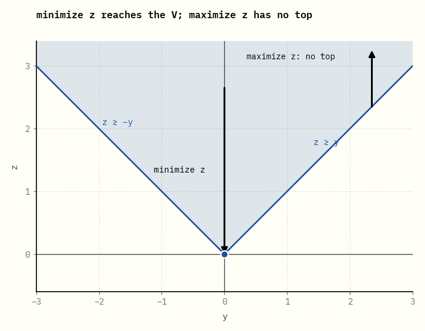
The same picture shows why maximizing |y| fails. The trick replaces the V by the whole region above it. Minimizing slides down to the V, but maximizing climbs off the top, since nothing in z ≥ y and z ≥ −y stops z from growing. Tovey's example: maximize |y| subject to y = 1. The answer is 1, but the LP "maximize y⁺ + y⁻ subject to y⁺ − y⁻ = 1" allows (1 + s, s) for every s ≥ 0, worth 1 + 2s, and has no best plan. Maximizing |y| over −1 ≤ y ≤ 2 means comparing the two ends; with many such terms the ends multiply, which is why maximizing a maximum is not a linear program.
The largest disc that fits
The same two ideas, one new variable and Cauchy–Schwarz, turn a question of geometry into an LP: what is the largest disc inside the mill's region?
Lemma. The disc of radius r ≥ 0 around x lies in the half-plane a·y ≤ b exactly when a·x + r |a| ≤ b.
Proof. Every point of the disc is x + r d with |d| ≤ 1, and a·(x + r d) = a·x + r (a·d) ≤ a·x + r |a| by Cauchy–Schwarz. So if a·x + r |a| ≤ b, the whole disc obeys the row. Conversely, if a ≠ 0 the point x + r a ÷ |a| is in the disc and gives exactly a·x + r |a|, so if the disc obeys the row this number is at most b. ∎
The factor |a| is the one from chapter 1's closedness proof: the most hours a step of length r can add is r |a|. With the four rows of the mill, the question becomes an LP in t, f and r:
maximize r subject to t + 2f + √5 r ≤ 32, t + f + √2 r ≤ 20, r ≤ t, r ≤ f.
√5 and √2 are only numbers, so every row is linear.
![The mill's region with a disc whose centre (r, r) climbs the diagonal from the origin, so it always touches both axes while its radius r grows. The readout gives the press row t + f + √2 r and the lathe row t + 2f + √5 r at the current disc. At r = 20 − 10√2 ≈ 5.86 the press row reaches 20 and the disc touches the press wall; the lathe row is 30.67, short of 32, and the disc stays 0.59 away from the lathe wall. The final frame reads: the largest disc touches the press wall and both axes, not the lathe wall.](chapters/03-writing-it-down/disc.gif)
The largest disc has centre (r, r) with r = 20 − 10√2 ≈ 5.86. It touches both axes and the press wall, and misses the lathe wall by 0.59. That this is the largest is proved the chapter 2 way, with multipliers 1, 1, 1 on the press row and the two axis rows:
(t + f + √2 r) + (r − t) + (r − f) = (2 + √2) r ≤ 20,
so every disc that fits has r ≤ 20 ÷ (2 + √2) = 20 − 10√2. Three times now a best answer has been proved by adding rows with multipliers that are not negative. Chapter 6 turns that move from a trick into a method.
The one thing to remember. Write each decision as a number with a unit and each rule as a row whose units agree; a request that maximizes a minimum or minimizes a maximum becomes linear with one new variable that the objective pushes against its rows.
4More rows from words
Chapter 3 had one trick behind several disguises: a new variable, held on one side by rows and pushed against them by the objective. This chapter is the rest of the stock of patterns a working modeller reaches for: costs that get steeper, penalties for falling short, mixtures with a required proportion, stock carried from one week to the next, plans made before the order is known, and one more disc. Each pattern comes with the question that keeps it honest: does the objective really push the new variable where the words say it is?
History. Kantorovich's 1939 booklet, Mathematical Methods of Organizing and Planning Production, grew from a talk he gave at Leningrad State University on 13 May 1939. The plywood problem is only its second appendix. Its chapters work through other kinds of plan, among them the best distribution of arable land between crops. It reached English readers in 1960, in Management Science, because Koopmans pushed for its translation.
Costs that get steeper
Suppose the lathe can run overtime. The first 4 extra hours cost 1,000 roubles each, because the regular crew stays late. The next 4 cost 3,000 each, because a second crew has to be called in. Running u extra hours then costs
h(u) = u for 0 ≤ u ≤ 4, and h(u) = 4 + 3(u − 4) = 3u − 8 for 4 ≤ u ≤ 8.
The two pieces meet at u = 4, where both give 4, and after that the cost rises more steeply. That makes h the larger of the two lines at every u: h(u) = max(u, 3u − 8). A function that is the largest of a few linear ones is called piecewise linear and convex. The smallest of a few linear functions is piecewise linear and concave.
Theorem (convex and concave pieces). If g1, …, gk are linear, then h(x) = max gi(x) is convex: h(λx + (1 − λ)y) ≤ λh(x) + (1 − λ)h(y) for every x, y and 0 ≤ λ ≤ 1. Likewise min gi(x) is concave, with the inequality reversed.
Proof. Fix x, y and λ, and let gj be the piece that attains the maximum at the point λx + (1 − λ)y. Linearity gives gj(λx + (1 − λ)y) = λgj(x) + (1 − λ)gj(y). Each piece is at most the maximum, so gj(x) ≤ h(x) and gj(y) ≤ h(y). Both λ and 1 − λ are nonnegative, which keeps those inequalities pointing the same way after multiplying, so h(λx + (1 − λ)y) ≤ λh(x) + (1 − λ)h(y). For the minimum, apply this to the pieces −gi, because min gi = −max(−gi). ∎
In pictures, the graph of a convex function never rises above the straight segment joining two of its points. It bends up, never down.
The mill now earns 3t + 5f − h(u), with t + 2f ≤ 32 + u, and h is not linear. Chapter 3's trick works again, the other way up. Add one variable z, the overtime bill, with two rows z ≥ u and z ≥ 3u − 8, and subtract z from the objective. The rows only stop z from going down. Maximizing 3t + 5f − z pushes z down, so at any best plan z sits on the higher of the two lines, z = h(u). This is the theorem of chapter 3 with max and min swapped: minimizing a maximum (here, a cost) is a linear program.
![The overtime cost h(u) for 0 ≤ u ≤ 8 extra lathe hours, drawn in rust as two linear pieces: slope 1 up to (4, 4), then slope 3 up to (8, 16). The extended pieces are dashed beyond their own range, so the cost is visibly the higher of the two lines. A blue line 2u shows the value the extra hours add to the plan, at 2,000 roubles per lathe hour. The vertical gap between the blue line and the rust cost is shaded where the hours pay for themselves. It is widest at u = 4, labelled "net gain 4", and it narrows after that, closing at u = 8, where the second crew's hours have used the gain up.](chapters/04-more-rows/tiers.png)
How many overtime hours should the lathe run? At the best corner of chapter 2 both walls are tight. Keeping them tight with 32 + u lathe hours means t + 2f = 32 + u and t + f = 20. Subtracting gives f = 12 + u, so t = 8 − u. Each extra hour moves the corner by one batch from 3-ply to 5-ply, which adds 5 − 3 = 2 thousand roubles: the lathe multiplier of chapter 2 again. While t ≥ 0, so for u up to 8, an hour adds 2. The first crew costs 1 an hour, which leaves 1 of gain. The second crew costs 3, which loses 1. So the best plan runs exactly the 4 cheap hours and makes (4, 16): 92,000 roubles of plywood less 4,000 of overtime, 88,000 in all, which is 4,000 more than without overtime.
The overtime can also be written as two variables, u1 ≤ 4 at price 1 and u2 ≤ 4 at price 3, with t + 2f ≤ 32 + u1 + u2. That only works because the cheaper tier comes first. If some plan used dear hours while cheap ones were left, moving one hour from u2 to u1 would leave the lathe exactly as it was and save 3 − 1 = 2, so no best plan does that. Reverse the prices, a dear first crew at 3 and a cheap second crew at 1, and the same argument now runs the wrong way. The LP buys the 4 cheap hours of the second crew without the 4 dear hours that must come before them, reports 88,000 roubles, and describes a plan the mill cannot carry out. The real cost is now concave: discounts for volume. Minimizing a concave cost is not a linear program. Chapter 5 shows what it takes.
Falling short of an order
A buyer orders 14 batches of 5-ply and charges q thousand roubles for every batch short. The shortfall is max(0, 14 − f), the positive part of 14 − f. Write it as a variable u with u ≥ 14 − f and u ≥ 0, and subtract qu from the objective. When q > 0 the objective pushes u down onto the larger of 0 and 14 − f, by the same argument as the overtime bill.
The best plan of chapter 2 makes only 12, so it is 2 batches short. Making another batch of 5-ply means sliding along the lathe wall: one more 5-ply and two fewer 3-ply, which loses 6 − 5 = 1 of value. It saves q of penalty. So the penalty matters only when it is more than 1:
- at q = ½ the mill stays at (8, 12) and pays 1 thousand roubles, keeping 83,000;
- at q = 3 it moves to (4, 14), fills the order, and keeps 82,000.
![The mill's region and the order line f = 14, with the penalty q rising from 0 to 3 thousand roubles per missing batch. The readout shows q, the best plan, its plywood value, the penalty and what the mill keeps. For q below 1 the best plan stays at (8, 12), two batches short, and the penalty bar grows. At q = 1 the whole stretch of the lathe wall from (8, 12) to (4, 14) is drawn as tied. Above 1 the best plan jumps to (4, 14) and the penalty is 0. The final frame holds at q = 3: (4, 14), 82,000 roubles kept.](chapters/04-more-rows/shortfall.gif)
At q = 3 the move of chapter 2 proves the claim. Take the lathe row with multiplier 3 and the order row, −f − u ≤ −14, with multiplier 1:
3(t + 2f) + (−f − u) = 3t + 5f − u ≤ 3 × 32 − 14 = 82.
The value is 3t + 5f − 3u, which is at most 3t + 5f − u because u ≥ 0. So no plan keeps more than 82, and (4, 14) keeps exactly that. The multiplier on the order says a batch of the order is worth 1 thousand roubles to the mill: the 1 of value lost per batch on the lathe wall.
The trick needs q > 0. With q = 0 nothing pushes u down, and any u ≥ 14 − f is allowed, so u no longer measures anything. The rows say "u is at least the shortfall", never "u is the shortfall". Only the objective can make it equal.
A required proportion
Say the Trust rules that at least three batches in five must be 3-ply: t ÷ (t + f) ≥ 3/5. A ratio is not linear. When t + f > 0, both sides can be multiplied by t + f without turning the inequality round, because t + f is positive:
5t ≥ 3(t + f), that is 3f − 2t ≤ 0.
This is a wall through the origin, the line f = (2/3)t. That it passes through the origin is no accident. Doubling a plan doubles both t and t + f, so the ratio does not change, and every rule about proportions is a wall through (0, 0). The same rows describe blending in general: if product i has quality qi and the mixture must average at least q̄, then Σ qi xi ÷ Σ xi ≥ q̄ becomes Σ (qi − q̄) xi ≥ 0.
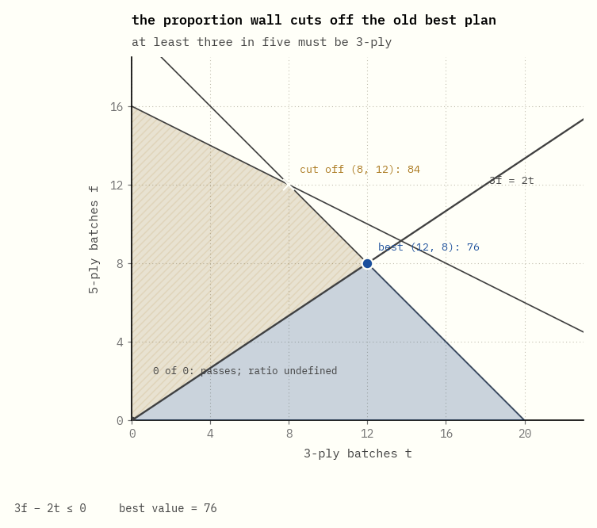
The best plan is now (12, 8), worth 76,000 roubles: the rule costs 8,000. Multipliers 19/5 on the press row and 2/5 on the proportion row prove it, since (19/5)(t + f) + (2/5)(3f − 2t) = 3t + 5f, so 3t + 5f ≤ (19/5) × 20 = 76.
One thing is lost in the multiplication. At (0, 0) the ratio is 0 ÷ 0, which means nothing, but the row 3f − 2t ≤ 0 holds. Here that does no harm, because the mill wants to make something. In a model that minimizes cost it can do harm: the cheapest mixture that satisfies the row is no mixture at all, unless another row demands an amount.
Stock that carries over
Two weeks now. In week 1 the mill has its usual 32 lathe hours and 20 press hours, but buyers will take only 8 batches of 5-ply. In week 2 the press is under repair and has 10 hours, and buyers will take 16 batches of 5-ply. A batch of 5-ply can be stored from week 1 to week 2 for 1 thousand roubles. 3-ply sells without limit.
The new rows are balances. What is made either is sold or goes into store:
made in week 1 = sold in week 1 + stored, stored + made in week 2 = sold in week 2.
Each is an equation, so two walls (chapter 3), and they are the only rows that mention both weeks. The best plan:
| 3-ply made | 5-ply made | 5-ply sold | 5-ply stored | |
|---|---|---|---|---|
| week 1 | 8 | 12 | 8 | 4 |
| week 2 | 0 | 10 | 14 |
It is worth 3 × 8 + 5 × 8 + 5 × 14 − 4 = 130 thousand roubles. Week 2 cannot make enough 5-ply, because its press runs out at 10 batches. So week 1 makes the plan of chapter 2 and stores the 4 batches its own buyers will not take. Why not store more? A 6th or 7th batch for week 2 would have to come from sliding week 1 along its lathe wall: 6 roubles of 3-ply given up, 1 of storage paid, 5 earned in week 2, a loss of 2.
The multipliers that prove this plan best are, in thousands of roubles: 1 for a week-1 lathe hour, 2 for a week-1 press hour, 5 for a week-2 press hour, 4 for a batch of 5-ply in week 1's balance, 5 in week 2's, and 1 for a week-1 buyer. The week-2 lathe gets 0, because 12 of its hours are idle. The two balances differ by exactly the cost of storage, 5 − 4 = 1. This is what the balances are for: a 5-ply batch in week 1 is worth what it will fetch in week 2, less the cost of keeping it. Chapter 7 shows how to read prices like these, and the tests check that they add up to 130.
The same balance governs every network: water through pipes, passengers through airports, money through accounts. In at every node equals out.
Deciding before the order is known
Go back to one week and the order of 5-ply, with a penalty of 3 thousand roubles per missing batch. But now the order will be either 12 or 16 batches, and the mill must fix its plan before it knows which. The plan (t, f) is one choice for both cases. The shortfall is not: if the order is 12 the mill is u12 short, if it is 16 it is u16 short, with u12 ≥ 12 − f, u16 ≥ 16 − f, and both ≥ 0. With probabilities p12 and p16, the mill maximizes its expected earnings,
3t + 5f − 3(p12 u12 + p16 u16).
That is still linear, because the probabilities are numbers known in advance, not variables. The plan has no index for the case; the shortfalls do. That asymmetry is the whole model: a decision made now cannot depend on something learned later.
Between 12 and 16 batches each extra batch of 5-ply costs 1, sliding along the lathe wall. It saves 3 only if the order turns out to be 16, so 3 × p16 on average. It is worth making when 3p16 > 1, that is p16 > 1/3:
- with p16 = ½ the mill makes 16 batches of 5-ply and no 3-ply, and expects 80,000 roubles;
- with p16 = ¼ it makes the plan of chapter 2 and expects 84 − 3 × ¼ × 4 = 81 thousand roubles.
In neither case is it the plan for the average order, which would be 14 batches when p16 = ½ and 13 when p16 = ¼. What decides is the chance of the larger order against the ratio of cost to penalty.
The smallest disc that reaches every wall
Chapter 3 found the largest disc inside the region. The opposite question has a different answer: the smallest disc that meets all four lines, the lathe wall, the press wall and the two axes, wherever its centre is. A disc of radius r centred at x meets the line a·y = b exactly when the distance from x to the line is at most r, and chapter 1 measured that distance:
r ≥ |a·x − b| ÷ |a| for every wall.
This is a minimum of a maximum of absolute values, so each wall gives two rows, r ≥ (a·x − b) ÷ |a| and r ≥ (b − a·x) ÷ |a|, and the objective is "minimize r". Both rows are needed. With the centre at (0, 0) and the lathe wall, a·x − b = −32, and the first row alone would allow r = 0, a disc of no size that is nowhere near the wall. The second row is what says r ≥ 32 ÷ √5.
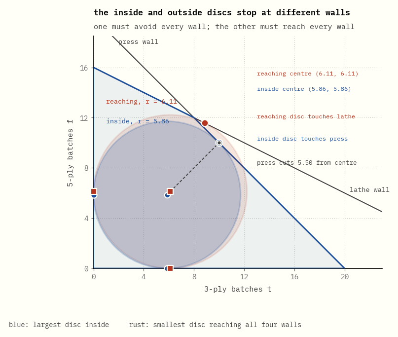
The best disc touches both axes, so its centre is (r, r), and it just reaches the lathe wall:
(32 − r − 2r) ÷ √5 = r, so r = 32 ÷ (3 + √5) = 24 − 8√5 ≈ 6.11.
To prove nothing smaller works, add three of the rows. For any centre (t, f), r ≥ t, r ≥ f and r ≥ (32 − t − 2f) ÷ √5. Multiply them by 1, 2 and √5, divided by 3 + √5, and add. The t and f terms cancel, the r terms add to r, and what is left is r ≥ 32 ÷ (3 + √5). The multipliers are positive, so the inequalities keep their direction. The press wall plays no part: the disc crosses it, 5.50 from the centre.
The two discs answer opposite questions. The disc inside must keep away from its nearest wall, and the press wall stops it. The disc that reaches must get to its farthest wall, and the lathe wall stops it.
The one thing to remember. A new variable means what the words say only if the objective pushes it against its rows. Before trusting one, ask which way the objective moves it, and what stops it.
5Yes-or-no decisions
Some words do not turn into rows at all. "Either none, or at least 14." "Pay the setup only if the line runs." "One rule or the other." This chapter shows why no linear program can say them. Then it adds the one ingredient that can, a variable allowed only the values 0 and 1, and counts what that ingredient costs.
A rule no wall can make
The 5-ply buyer now takes either nothing or a full contract of at least 14 batches. The plans that obey are those with f = 0 and those with f ≥ 14. Both (20, 0) and (4, 14) are allowed, but their midpoint (12, 7) is not, because 7 is neither 0 nor at least 14.
Chapter 1 proved that every region cut out by walls is convex: the segment between two of its plans stays inside. This set of plans contains two points and not their midpoint, so it is not convex, and no list of walls, however long, has it as its region. The words cannot be written as an LP. Something other than walls is needed.
![The mill's region with the plans that obey "f = 0 or f ≥ 14" drawn in blue: the bottom edge from (0, 0) to (20, 0), and the cap of the region above the line f = 14, with corners (0, 14), (4, 14) and (0, 16). The rest of the region is greyed out. A dashed segment joins (20, 0) to (4, 14), and its midpoint (12, 7) is marked with a cross and the label "midpoint, not allowed". The plan (8, 12) is marked in amber with the label "relaxation: 84, not a real plan", and (4, 14) is marked in blue with "best real plan: 82".](chapters/05-yes-or-no/union.png)
A variable that is 0 or 1
Add z, which can only be 0 or 1, read as "the contract is taken". Then write
14z ≤ f ≤ 16z.
Check both cases, because that is the only way to trust such a pair of rows. At z = 0 they say 0 ≤ f ≤ 0, so f = 0. At z = 1 they say 14 ≤ f ≤ 16. The 16 is not arbitrary: the lathe alone allows at most 32 ÷ 2 = 16 batches of 5-ply, so f ≤ 16 removes no plan the mill could make anyway.
A problem whose rows and objective are linear but which has some variables restricted to whole numbers is a mixed-integer linear program. It is not a linear program, and none of the theory of chapters 6 to 23 applies to it as it stands. With one yes-or-no variable it can still be solved by trying both values. At z = 1 the best plan is (4, 14), worth 82. At z = 0 it is (20, 0), worth 60. So the mill takes the contract and keeps 82,000 roubles. With k such variables there are 2^k cases to try, which is why problems with them are hard and the methods for them are a subject of their own.
History. The standard method for mixed-integer programs, branch and bound, was published in 1960 by Ailsa Land and Alison Doig at the London School of Economics. It avoids trying all 2^k cases by solving relaxations, described next, and discarding every case whose relaxation already does worse than a plan in hand.
The relaxation, and why it is too hopeful
Allow z anywhere from 0 to 1 instead of only 0 or 1. The result is a linear program again, the relaxation. It answers 84, at (8, 12) with z = ¾: the rows 14z ≤ 12 ≤ 16z hold for any z between ¾ and 6/7. The plan of chapter 2 comes back, with three quarters of a contract.
Theorem. The best value of the relaxation is at least the best value of the mixed-integer program.
Proof. Every pair (x, z) with z equal to 0 or 1 also has 0 ≤ z ≤ 1, so every plan the integer program allows is allowed by the relaxation. The best of a larger set is at least the best of a smaller one. ∎
That is the use of the relaxation: it is a ceiling, 84 here against the true 82, and it is quick to compute. A tighter ceiling is more useful, and how tight it is depends on how the rows are written.
Paying for a setup
Return to the plain mill, without the contract. Running the press for 5-ply needs a change of glue that costs F thousand roubles, once, if any 5-ply is made. With z = 1 meaning "set up for 5-ply":
maximize 3t + 5f − Fz, with f ≤ Uz and z equal to 0 or 1,
where U is any number at least the most 5-ply the mill could make. At z = 0 the row forces f = 0. At z = 1 it says f ≤ U, which removes nothing. And since F > 0, the objective never sets z = 1 without making some 5-ply.
With F = 30 the cases are: set up, make (8, 12), and keep 84 − 30 = 54; or do not set up, make (20, 0), and keep 60. The mill makes no 5-ply.
In the relaxation, z only has to be at least f ÷ U, and z costs money, so it sits exactly there. The setup is then charged by the batch, F ÷ U per batch, instead of all at once. With U = 16, the smallest valid bound, the relaxation's answer is 61.5 at (8, 12) with z = ¾: it pays 22.5 of the 30. With U = 100, also a valid bound but a careless one, it is 80.4, with z = 3/25 and a setup cost of 3.6. Both ceilings are true. Only the first is close.
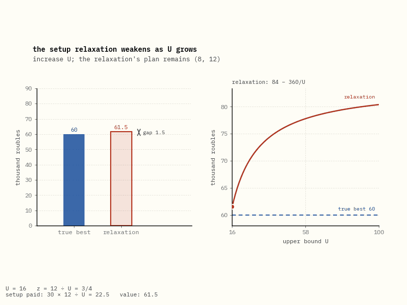
One rule or the other
The last pattern switches a whole wall on and off. Say a safety rule allows either at most 6 batches of 3-ply, or at most 6 batches of 5-ply. With z choosing which rule binds:
t ≤ 6 + M1 z, f ≤ 6 + M2 (1 − z).
At z = 0 the first row is t ≤ 6, and the second must not cut anything. At z = 1 it is the other way round. A row that is "switched off" has to be switched off for real.
Theorem (a valid M). Let X be the plans allowed by the other rows. The row a·x ≤ b + M removes no plan of X exactly when M ≥ a·x − b for every x in X, that is, M is at least the largest amount by which a plan of X breaks the rule.
Proof. The row holds at x exactly when a·x − b ≤ M. It holds at every x in X exactly when M is at least every one of these numbers. ∎
For the mill, the largest t is 20 and the largest f is 16, so M1 must be at least 20 − 6 = 14 and M2 at least 16 − 6 = 10. If X were unbounded in the direction a, no M would be large enough, and the trick would fail.
With valid bounds the two cases give: rule t ≤ 6, best plan (6, 13) worth 83; rule f ≤ 6, best plan (14, 6) worth 72. So the mill takes the first rule and keeps 83,000 roubles.

Now take M2 = 6, too small by 4. At z = 0 the second row should be switched off, but it still says f ≤ 12. That removes (6, 13), and the model reports (6, 12), worth 78. It is not an error message. It is a wrong answer that looks like every other answer. A small M can cut off the true best plan, and a large M weakens the relaxation, as in the setup. The right M is the smallest valid one, computed from the rows, not guessed.
The steeper-then-cheaper overtime of chapter 4 needs the same tool. Let w = 1 mean the second crew is called. Then u1 ≥ 4w says the first crew's 4 hours are used up before the second crew starts, and u2 ≤ 4w says the second crew works only if called. Both cases tie at 84: no overtime, or all 8 hours at (0, 20), where 16 of extra value pays exactly 3 × 4 + 1 × 4 = 16 of cost. The LP of chapter 4 had reported 88 for a plan that could not be carried out.
The "big M" of chapter 17 shares only the name. That one is a large penalty on artificial variables, used to find a first corner for the simplex method. It has no yes-or-no variables and keeps everything a linear program.
The one thing to remember. Walls only make convex regions. A rule with an "or" in it needs a 0-or-1 variable; check both of its values by hand, and use the smallest M that removes nothing it should not.
6Someone buying the hours
Three times now a best plan has been proved best by the same move: give each row a multiplier that is not negative, add the rows up, and find the value sitting on the left with a number on the right. Each time the multipliers were found by staring at the answer. This chapter asks where they come from, and the answer is a second linear program hiding inside the first.
An offer for the whole stock
Suppose a buyer comes to the Trust and offers to rent every hour the mill has: y₁ roubles (in thousands) for each lathe hour and y₂ for each press hour. The mill would be paid 32y₁ + 20y₂ and make nothing. When should it say yes?
Look at one batch of 3-ply. It takes one lathe hour and one press hour, so renting those hours out instead earns y₁ + y₂. Making the batch earns 3. If y₁ + y₂ < 3, the mill does better keeping the hours and pressing 3-ply. The same goes for 5-ply, which takes two lathe hours and one press hour and is worth 5. The offer is fair, in the sense that no batch the mill could make is worth more than the hours it uses, exactly when
| lathe price | press price | value | ||
|---|---|---|---|---|
| 3-ply's hours | 1 × y₁ | + 1 × y₂ | ≥ | 3 |
| 5-ply's hours | 2 × y₁ | + 1 × y₂ | ≥ | 5 |
with y₁, y₂ ≥ 0, since a negative price would mean the mill pays to give hours away. The buyer wants to pay as little as possible. So the buyer has an LP of their own: minimize the bill 32y₁ + 20y₂ subject to the two rows. It is called the dual of the mill's problem, and the mill's problem is then the primal.
Look at where its numbers came from. The mill's table had a row for each resource and a column for each product. The buyer's table has a row for each product, and that row is the product's column in the mill's table: the hours one batch uses. The stocks 32 and 20, which were the mill's right-hand side, are the buyer's costs, and the values 3 and 5 have become the buyer's right-hand side. Written with the matrix A of chapter 3, the mill's problem is maximize c·x with Ax ≤ b and x ≥ 0, and the buyer's is minimize y·b with yA ≥ c and y ≥ 0. Nothing has been added. The same numbers have been read down the columns instead of across the rows.
![The plane of prices: lathe price y₁ across, press price y₂ up. Two rust lines are the products' rows, y₁ + y₂ = 3 for 3-ply and 2y₁ + y₂ = 5 for 5-ply, and the fair offers lie on the far side of both, shaded rust; the region has corners (0, 5), (2, 1) and (3, 0) and runs off to infinity up and to the right. An offer starts at (1, 1) and is coloured amber, with the readout showing 3-ply's hours worth 2 against a value of 3 and 5-ply's worth 3 against 5, so the mill would rather make plywood. The offer moves to (3, 0), turns rust, and the readout shows both products covered, with a bill of 96. Then the line of equal bills, 32y₁ + 20y₂ = k, sweeps down towards the origin, past bills of 100 at (0, 5) and 96 at (3, 0), and stops when it touches the region only at (2, 1). The final frame reads: cheapest fair offer, 2 and 1, a bill of 84,000 roubles.](chapters/06-buying-the-hours/offer.gif)
The fair offers form a region of their own, cut out by the products' walls in the plane of prices. It has three corners: (0, 5) with a bill of 100,000 roubles, (3, 0) with 96,000, and (2, 1) with 84,000. It is not bounded, which is right: a buyer can always offer more. What it does have is a floor. The cheapest fair offer is 2,000 roubles a lathe hour and 1,000 a press hour, the same 2 and 1 that chapter 2 used to prove (8, 12) best. The buyer's cheapest bill is 84,000 roubles, and that is what the mill's best plan earns.
That those two numbers agree is not a coincidence of this mill. But the first thing to prove is weaker, and it is the half that does the work.
Every fair bill is a ceiling
Theorem (weak duality). If x is any plan (Ax ≤ b, x ≥ 0) and y is any fair offer (yA ≥ c, y ≥ 0), then c·x ≤ y·b.
Proof. Three steps:
c·x ≤ (yA)·x = y·(Ax) ≤ y·b.
- The first ≤. (yA)·x − c·x = (yA − c)·x = Σⱼ ((yA)ⱼ − cⱼ) xⱼ. Every bracket is ≥ 0 because the offer is fair, and every xⱼ is ≥ 0 because batches cannot be negative, so every term of the sum is ≥ 0.
- The equals sign. Both sides are Σᵢ Σⱼ yᵢ Aᵢⱼ xⱼ: one adds each row's contributions first, the other each column's.
- The second ≤. y·b − y·(Ax) = Σᵢ yᵢ (bᵢ − Aᵢx). Every yᵢ is ≥ 0, and every bᵢ − Aᵢx is ≥ 0 because the plan fits the stock. ∎
Each step has a reading in roubles. c·x is what the plan earns. (yA)·x is what the hours the plan uses would fetch from the buyer, priced product by product. y·(Ax) is the same sum priced machine by machine. y·b adds the hours the plan leaves idle, which the buyer pays for too. So the two gaps in the chain are two different kinds of waste:
- the first gap is value lost by making something whose hours are worth more than the product;
- the second gap is money the buyer pays for hours the plan does not use.
Take the best plan (8, 12) against the fair but expensive offer (3, 0). The plan earns 84. Its hours priced product by product, at 3 for a 3-ply batch and 3·2 + 0·1 = 6 for a 5-ply batch, come to 3·8 + 6·12 = 96. Priced machine by machine, all 32 lathe hours at 3 and all 20 press hours at 0, they come to 96 again, and the plan leaves nothing idle, so the bill is 96. The whole gap of 12 sits in the first step: at these prices each 5-ply batch is worth one more in hours than in plywood, and the plan makes 12 of them.
Now the plan that makes only 5-ply, (0, 16), against the cheapest offer (2, 1). Here every product is priced exactly at its value, so the first step is an equality: 80 = 80. But the plan leaves 4 press hours idle, and the buyer pays 1 for each, so the bill is 84. The whole gap of 4 sits in the second step.
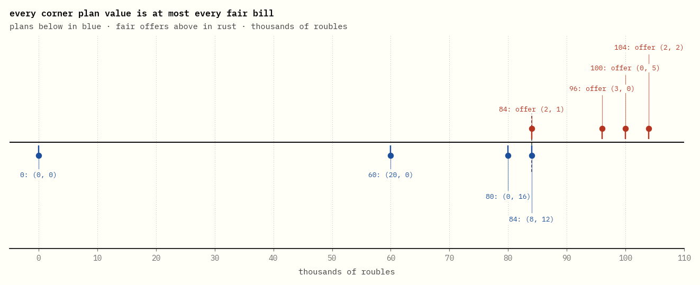
The theorem says more than the example. Every plan, not just the four corners, earns at most every fair bill, so a single fair offer is a ceiling on the whole region, and a single plan is a floor under every offer. When a plan and an offer meet, as (8, 12) and (2, 1) meet at 84, neither can be improved: the plan is under a ceiling it touches, and the offer is over a floor it touches. That is the proof of chapter 2 again, now read as a consequence of a theorem rather than an accident of the arithmetic.
Corollary. (i) If a plan x and a fair offer y have c·x = y·b, both are best. (ii) If the mill's values have no upper limit, there is no fair offer. (iii) If fair offers can be made as cheap as you like, there is no plan.
Proof. (i) Every plan x′ has c·x′ ≤ y·b = c·x, and every fair offer y′ has y′·b ≥ c·x = y·b. (ii) A fair offer y would cap every plan's value at y·b. (iii) A plan x would put a floor c·x under every bill. ∎
Case (ii) is easy to meet. Take the mill with only the rule t − f ≤ 4: the 3-ply never runs more than 4 batches ahead of the 5-ply. Plans can grow along t = f without end. The dual has one price y ≥ 0 and the two rows y ≥ 3 and −y ≥ 5, which no number satisfies. The buyer has no fair offer to make because there is nothing finite to pay for.
History. In October 1947 Dantzig met John von Neumann to describe his linear programs. Von Neumann saw the dual, and the duality theorem, as fast as the problem was explained: he cited Farkas's lemma and guessed that it was the same theorem as his own minimax theorem for two-person games, which Dantzig later checked. Dantzig wrote and circulated the first proof within months but never published it, because he thought of it as von Neumann's. The first published proof is Gale, Kuhn and Tucker's, in 1951. (Tovey, §5.5 notes.)
Why the signs are what they are
The proof used two facts about signs: xⱼ ≥ 0 made each term ((yA)ⱼ − cⱼ) xⱼ safe, and yᵢ ≥ 0 made each yᵢ (bᵢ − Aᵢx) safe. Real problems have rows that say ≥ or =, and variables that can be negative (chapter 3 removed them, but removing them is not always convenient). Each such change breaks one term of the proof, and the dual has to change to mend it.
![Two panels in the plane of plans, each with the quadrant of plans with t, f ≥ 0. Left: the fair offer (3, 0) gives yA − c = (0, 1), drawn as an arrow; the half-plane of plans where (yA − c)·x ≥ 0, every plan with f ≥ 0, contains the whole quadrant, so the first step of the proof holds at every plan. Right: the offer (1, 2) prices 5-ply's hours at 4, below its value 5, so yA − c = (0, −1); that half-plane leaves out every plan that makes any 5-ply, shaded amber. The plan (0, 16) is marked there: it earns 80, and the offer's bill is 72, so the would-be ceiling is below it.](chapters/06-buying-the-hours/signs.png)
The picture shows what a broken sign costs. With yA − c = (0, −1), the offer undervalues 5-ply, and the first step fails for every plan that makes some. At (0, 16) the plan earns 80 while the bill is 32 + 40 = 72. A price that is not fair is not a ceiling.
So the rule is: choose each sign so that every term in the proof is ≥ 0 whatever the plan does. For a maximization:
| in the primal (maximize) | the term in the proof | so in the dual |
|---|---|---|
| row i says ≤ | yᵢ × (a slack ≥ 0) | yᵢ ≥ 0 |
| row i says ≥ | yᵢ × (a slack ≤ 0) | yᵢ ≤ 0 |
| row i says = | yᵢ × 0 | yᵢ any sign |
| xⱼ ≥ 0 | ((yA)ⱼ − cⱼ) × (a number ≥ 0) | (yA)ⱼ ≥ cⱼ |
| xⱼ ≤ 0 | ((yA)ⱼ − cⱼ) × (a number ≤ 0) | (yA)ⱼ ≤ cⱼ |
| xⱼ any sign | ((yA)ⱼ − cⱼ) × (any number) | (yA)ⱼ = cⱼ |
Each line is forced. A product of a fixed number with an unknown number of known sign is ≥ 0 every time only if the fixed number has that sign too, and a product with an unknown number of either sign is ≥ 0 every time only if the fixed number is 0. That is the whole table. There is nothing to memorize: rebuild it from the chain whenever you need it.
For a minimization the chain runs the other way, c·x ≥ (yA)·x = y·(Ax) ≥ y·b, so every term must be ≤ 0 instead, and every line flips: a ≥ row gets yᵢ ≥ 0, a ≤ row gets yᵢ ≤ 0, an = row a free yᵢ, xⱼ ≥ 0 gets (yA)ⱼ ≤ cⱼ, xⱼ ≤ 0 gets (yA)ⱼ ≥ cⱼ, and a free xⱼ gets (yA)ⱼ = cⱼ.
An equality row gets a free price, and that has a meaning. With Ax = b the mill must use exactly its stock, so an hour can be worth a negative amount: being forced to use it may cost money. A ≤ row lets the mill leave hours idle, and an idle hour cannot be worth less than nothing.
Proposition (the dual of the dual is the primal). Apply the table to the buyer's problem, minimize y·b with yA ≥ c and y ≥ 0, and the result is the mill's problem.
Proof. The buyer minimizes, has a ≥ row for each product j, and a price yᵢ ≥ 0 for each resource. By the minimization table each ≥ row gets a new variable xⱼ ≥ 0, and each yᵢ ≥ 0 gets a row that says (Ax)ᵢ ≤ bᵢ, where the new problem's objective is to maximize Σⱼ cⱼ xⱼ. That is maximize c·x with Ax ≤ b and x ≥ 0. ∎
So "primal" and "dual" are not two kinds of problem. They are the two ends of one pair, and it does not matter which end you start from. A textbook that writes the pair as minimize c·x with Ax ≥ b, x ≥ 0 and maximize y·b with yA ≤ c, y ≥ 0 is writing the mill and the buyer with the names swapped.
The three certificates, again
Every proof so far was a fair offer in disguise.
- Chapter 2. The multipliers 2 and 1 on the lathe and press rows are the buyer's cheapest offer. Its bill, 84, meets the plan (8, 12).
- Chapter 3, complete sets. The rows were lathe, press, z − t ≤ 0 and z − f ≤ 0, and the multipliers were 0, ½, ½ and ½. They are a fair offer for the problem "maximize z": the column of t gets ½ − ½ = 0 against a value of 0, the column of f the same, and the column of z gets ½ + ½ = 1 against a value of 1. The bill is ½ × 20 = 10, which is where the plan (10, 10, 10) sits.
- Chapter 3, the largest disc. Multipliers 1, 1 and 1 on three rows gave (2 + √2) r ≤ 20. Divide them by 2 + √2 and each becomes 1 − √2 ÷ 2 ≈ 0.29. That is a fair offer for "maximize r", and its bill is 20 − 10√2, the radius.
In each case the buyer's problem was there to be solved. It was solved by eye because it was small. From here on it is solved on purpose.
What weak duality cannot say is that a meeting always happens: that for every LP with a best plan, some fair offer bills exactly its value. That is the strong duality theorem. It is true, and it is proved twice later, once from the walk of the simplex method (chapter 14) and once from separating a point from a shape (chapter 23). Until then it is a promise, and the chapters in between do not use it.
The one thing to remember. Price every resource so that no product is worth more than the hours it uses; then whatever plan you choose earns at most the bill, so one such price list proves a plan best by meeting it.
7What one more is worth
Kantorovich did not call his multipliers prices. Later he called them objectively determined valuations, and his critics heard prices anyway, a market sneaking into the plan. This chapter shows what the valuations measure: what one more hour of a machine adds to the best plan, and over what range that holds. Then it gives the two rules that link a best plan to its prices without solving anything.
One more lathe hour
Give the lathe b hours instead of 32 and keep the press at 20. While both walls are tight at the best corner, t + 2f = b and t + f = 20. Subtracting gives f = b − 20, so t = 40 − b. The value there is
3(40 − b) + 5(b − 20) = 2b + 20,
which gives 84 at b = 32. Each extra lathe hour adds exactly 2 thousand roubles: one batch moves from 3-ply to 5-ply, and 5 − 3 = 2. That is the lathe multiplier of chapter 2.
The formula holds only while the corner exists. It needs t = 40 − b ≥ 0 and f = b − 20 ≥ 0, so 20 ≤ b ≤ 40. Outside that range a different corner is best:
| lathe hours b | best plan | value | worth of one more hour |
|---|---|---|---|
| 0 to 20 | (b, 0) | 3b | 3 |
| 20 to 40 | (40 − b, b − 20) | 2b + 20 | 2 |
| 40 and more | (0, 20) | 100 | 0 |
Below 20 hours the lathe is so short that the press has hours to spare, and the best use of a lathe hour is a whole batch of 3-ply. Above 40 the press is the limit, and the lathe hours beyond 40 sit idle and add nothing.
![The mill's region as the lathe wall t + 2f = b slides outwards from b = 16 to b = 44 while the press wall stays fixed. The best corner, in blue, starts at (16, 0) on the floor, reaches (20, 0) at b = 20, then climbs the press wall through (8, 12) at b = 32 to (0, 20) at b = 40, where it stops while the lathe wall moves on alone. The readout shows b, the best plan, its value and the worth of the last hour, which reads 3, then 2, then 0. At b = 32 the frame pauses with the value 84 and the label "one more hour: +2".](chapters/07-one-more/lathe_slide.gif)
The press works the same way. With the lathe at 32 and the press at b hours, the tight corner is t = 2b − 32, f = 32 − b, with value b + 64. That gives 84 at b = 20 and adds 1 per press hour, for 16 ≤ b ≤ 32. Below 16 a press hour is worth 5 (all 5-ply, the lathe idle), and above 32 it is worth 0.
Theorem (the price inside its range). For lathe stock b between 20 and 40, with the press at 20, the best value is exactly 2b + 20, the bill of the offer (2, 1) for the stock (b, 20).
Proof. The fair offers do not depend on the stock: the rows y1 + y2 ≥ 3 and 2y1 + y2 ≥ 5 mention only the products' values and hours. So (2, 1) is fair for every stock, and by weak duality (chapter 6) no plan earns more than its bill, 2b + 20. The plan (40 − b, b − 20) is a plan when 20 ≤ b ≤ 40, and it earns exactly 2b + 20. A plan that reaches a ceiling is best. ∎
The proof uses no picture and no list of corners, and it shows why the price can be trusted only on a range. The ceiling 2b + 20 is valid for every b. What fails outside the range is the plan that reaches it.
The value is the cheapest bill
The three rows of the table are three bills. The offer (3, 0) bills 3b for the stock (b, 20), the offer (2, 1) bills 2b + 20, and the offer (0, 5) bills 100. These are the three corners of the buyer's region from chapter 6. On every range the best value is the smallest of the three:
value(b) = min(3b, 2b + 20, 100).
At b = 10 the bills are 30, 40 and 100, and the value is 30. At b = 32 they are 96, 84 and 100, and it is 84. At b = 50 they are 150, 120 and 100, and it is 100. A minimum of linear functions is concave (chapter 4), so the value bends downwards: each extra lathe hour is worth no more than the one before, 3, then 2, then 0. That the value is the cheapest fair bill for every stock, in every LP, is the strong duality theorem, proved in chapter 23. For the mill the table has just checked it on every range.
![Two panels. Left: the best value against lathe hours b from 0 to 50, with the press at 20, drawn in blue as three joined pieces with slopes 3, 2 and 0, bending at b = 20 (value 60) and b = 40 (value 100). The three bills 3b, 2b + 20 and 100 of the offers (3, 0), (2, 1) and (0, 5) are dashed rust lines, and the blue curve runs along the lowest of them. The point (32, 84) is marked. Right: the same for press hours b from 0 to 40 with the lathe at 32: slopes 5, 1 and 0, bends at b = 16 (value 80) and b = 32 (value 96), and the bills 5b, 32 × 2 + b and 96 of the offers (0, 5), (2, 1) and (3, 0), with (20, 84) marked.](chapters/07-one-more/value_curves.png)
At the bends the price is not one number. At b = 20 the offers (3, 0) and (2, 1) bill the same 60, and the next hour is worth 2 while the last one was worth 3. Chapter 22 is about what goes wrong there.
Two rules that link a plan to its prices
Chapter 6 split the gap between what a plan earns and what an offer bills into two sums:
- gap 1 = Σ over products of (hours' worth − value) × batches made;
- gap 2 = Σ over resources of price × hours left idle.
Every term of both sums is ≥ 0. A sum of nonnegative terms is zero only if every term is zero, so a plan and a fair offer meet, c·x = y·b, exactly when both of the following hold.
Theorem (complementary slackness). A plan x and a fair offer y have c·x = y·b if and only if
- every resource with hours left idle has price 0: if Aᵢx < bᵢ then yᵢ = 0;
- every product that is made is priced exactly at its value: if xⱼ > 0 then (yA)ⱼ = cⱼ.
Proof. c·x = y·b exactly when gap 1 + gap 2 = 0. Both gaps are sums of terms ≥ 0, so this happens exactly when every term is 0. A term of gap 2 is yᵢ(bᵢ − Aᵢx), and it is zero exactly when yᵢ = 0 or the resource is used up, which is rule 1. A term of gap 1 is ((yA)ⱼ − cⱼ)xⱼ, and it is zero exactly when xⱼ = 0 or the product is priced at its value, which is rule 2. ∎
By chapter 6, a plan and an offer that meet are both best. So the rules certify optimality: find a fair offer that obeys them with your plan, and the plan is best. The converse, that every best plan has such an offer, needs strong duality, and waits for chapter 23.
The rules turn a guess at the plan into equations for the prices. Guess (8, 12). Both products are made, so rule 2 says both are priced exactly: y1 + y2 = 3 and 2y1 + y2 = 5. That gives y = (2, 1). It is ≥ 0, so it is fair, and the plan is best. No corner was compared with any other.
Guess (0, 16) instead. The press has 4 hours idle, so rule 1 sets y2 = 0. The 5-ply is made, so rule 2 says 2y1 + y2 = 5, and y1 = 5/2. The 3-ply is not made, so rule 2 says nothing about it, but the offer must still be fair, and y1 + y2 = 5/2 is less than 3. The only prices the rules allow are not fair, so no fair offer meets this plan, and (0, 16) is not best. This is the split 2.5 and −0.5 from chapter 2, now with a reason: the price that rules allow leaves 3-ply worth more than its hours.
The rules explain the zeros seen so far. In chapter 3 the plan with 10 complete sets left 2 lathe hours idle, and its multiplier on the lathe row was 0. In chapter 4 the second week left 12 lathe hours idle and its lathe price was 0. Spare capacity is worth nothing at the margin, however much it cost to buy.
The one thing to remember. A resource's price is what one more unit adds to the best plan, valid only between the bends where the best corner changes; and a best plan and its prices fit together by two rules: idle resources are free, and whatever is made is worth exactly its resources.
8A wall between a point and a shape
The Trust can always ask for more than the mill can make. Say it asks for 11 batches of 3-ply and 16 of 5-ply. The plan needs 43 lathe hours and 27 press hours, so it is out of reach, and saying so is easy. Proving it to someone who distrusts the arithmetic, with one inequality they can check, is the question of this chapter. The answer is a wall: a line with the order on one side and every possible plan on the other. Chapters 10 and 23 build the theory of linear programming on it.
The nearest plan
Every plan is somewhere, and the order (11, 16) is outside. Among all plans, take the one nearest to it. The candidates are where the region is closest: the two walls and the corner where they meet.
- The press wall t + f = 20: its nearest point to (11, 16) would be the foot of the drop, (7.5, 12.5), which uses 32.5 lathe hours. That is not a plan.
- The lathe wall t + 2f = 32: its foot is (8.8, 11.6), which uses 20.4 press hours. That is not a plan either.
Both feet fall outside the region, so the nearest plan is where the two walls meet, the corner s* = (8, 12), at distance √(3² + 4²) = 5. (Step 2 below gives a test that confirms it without this case analysis.)
![The mill's region and the order x = (11, 16), above and to the right of it. A probe runs round the edge of the region from (0, 16) down to (20, 0), with a dashed segment from the order to the probe and a readout of its length. The length falls to 5.00 at the corner (8, 12), where the probe pauses and the segment is drawn solid, then rises again along the press wall. The final frame adds the separating line 3t + 4f = 84.5 through the midpoint (9.5, 14) of the solid segment, at right angles to it, with the order on its far side and the whole region on the near side.](chapters/08-separation/closest.gif)
Now draw the segment from the order to s*, and the line through its midpoint at right angles to it. The segment points along (8, 12) − (11, 16) = (−3, −4), so the line is 3t + 4f = constant, and the midpoint (9.5, 14) fixes the constant at 3 × 9.5 + 4 × 14 = 84.5. Check the two sides:
- the order: 3 × 11 + 4 × 16 = 97, above 84.5;
- every plan: 3t + 4f is at most 72, the value at (8, 12), because 3t + 4f = 1 × (t + 2f) + 2 × (t + f) ≤ 32 + 2 × 20 = 72.
The second line is a multiplier certificate of the chapter 2 kind, with multipliers 1 and 2. The wall is a proof anyone can check: no plan has 3t + 4f above 72, and the order has 97.
The line is not parallel to either wall of the mill. Its direction (3, 4) is 1 × (1, 2) + 2 × (1, 1), a mixture of the two walls that meet at s*. When the nearest plan is on an edge instead of a corner, the wall comes out parallel to that edge. The order (14, 10), for instance, has its nearest plan at (12, 8), the foot on the press wall, at distance 2√2, and the separating line is t + f = 22.
The theorem
Theorem (separating a point from a closed convex set). Let S be a closed convex set with at least one point, and x a point not in S. Then there is a vector π and a number π0 with π·x < π0 < π·s for every s in S.
The sign convention puts x below the line and S above it. For the mill, π = (−3, −4) and π0 = −84.5, which is the same line as above multiplied by −1.
The proof has three steps, and each one uses something from chapters 1 and 2.
Step 1 (a nearest point exists). Take any s0 in S, and let R = |x − s0|. Points of S further than R from x cannot be nearest, so look only at S ∩ B, where B is the closed disc of radius R around x. That set is closed (an intersection of two closed sets), bounded and not empty, and the distance |x − s| is continuous in s. By Weierstrass (chapter 2) it has a smallest value, at some s*.
Step 2 (the angle at the nearest point is never acute). For every s in S, (x − s*)·(s − s*) ≤ 0.
Proof. S is convex, so for every λ between 0 and 1 the point s* + λ(s − s*) is in S, and it is no nearer x than s* is. Write d = s − s* and u = x − s*. Then
|u − λd|² = |u|² − 2λ u·d + λ²|d|² ≥ |u|².
Cancel |u|² and divide by λ > 0: −2 u·d + λ|d|² ≥ 0. This holds for every small λ, and λ|d|² goes to 0 as λ does, so −2 u·d ≥ 0. ∎
Why the limit is needed: for a fixed λ the inequality only says u·d is at most λ|d|²/2, a small positive number. The point near s* on the segment is what forces u·d itself to be at most 0. In pictures: if the angle at s* between the order and some plan s were less than 90°, walking a short way from s* towards s would bring you closer to the order, and convexity says that walk stays inside S.
![The nearest plan s* = (8, 12), the order x = (11, 16), and a second plan s that moves round the region. The angle at s* between the arrows to x and to s is drawn and labelled, with the readout (x − s*)·(s − s*) = 3t + 4f − 72. As s moves, the angle stays between 90° and 180° and the readout stays at or below 0. It reaches 0 only at s* itself, where there is no angle to draw. The final frame shows an acute-angle case for a point s′ outside the region, with the short dashed walk from s* towards s′ coming closer to x and leaving the region, labelled "only possible outside S".](chapters/08-separation/obtuse.gif)
Step 3 (the wall). Put π = s* − x and π0 = π·m, where m = (x + s*)/2 is the midpoint. Step 2 says π·(s − s*) ≥ 0, so π·s ≥ π·s* for every s in S. Also π·s* − π·x = π·π = |π|² > 0, because s* ≠ x. The midpoint sits halfway: π·m = π·x + |π|²/2 = π·s* − |π|²/2. So
π·x < π0 < π·s* ≤ π·s. ∎
The midpoint is the ε ÷ 2 of chapter 1 again. Putting the wall at s* would let the plan s* touch it, and putting it at x would let the order touch it. Halfway leaves a margin of |π|²/2 on each side, which makes both inequalities strict. Read with chapter 1's dot product, π·z = |π||z| cos θ is |π| times the length of z's shadow on π. The wall is the set of points whose shadow is π0 ÷ |π| long, and the order's shadow is shorter than every plan's.
What fails without convex or closed
Both assumptions are used, and without either the theorem is false.
- Not convex. Take chapter 5's set of plans with f = 0 or f ≥ 14, and the point (12, 7), the midpoint of the allowed plans (20, 0) and (4, 14). A wall with π·(20, 0) > π0 and π·(4, 14) > π0 would have π·(12, 7) > π0 as well, since π·(12, 7) is the average of the two. No wall separates the midpoint from the set, even though the midpoint is not in it. Step 2 is where this breaks: the walk from s* towards another plan leaves the set.
- Not closed. Take chapter 2's mill with the press edge removed, so t + f < 20, and the point (10, 10) on the missing edge. Any wall π·z = π0 with π·(10, 10) < π0 fails for plans just inside the edge, which are as close to (10, 10) as you like, so π·s comes as close to π·(10, 10) as you like. No π0 sits strictly between them. Step 1 is where this breaks: there is no nearest point, only nearer and nearer ones.
![Two panels. Left: chapter 5's set f = 0 or f ≥ 14 in blue, with (20, 0) and (4, 14) joined by a dashed segment and the midpoint (12, 7) marked in amber. Three trial lines through the gap are drawn, and each one has (20, 0) or (4, 14) on the wrong side, marked with an amber cross. Caption: "not convex: the midpoint cannot be cut off". Right: the mill with the press edge dashed (left out) and the point (10, 10) on it in amber. Plans (9.9, 9.9), (9.99, 9.99) and so on approach it from inside. Caption: "not closed: no nearest point, no strict wall".](chapters/08-separation/no_wall.png)
History. The geometry of convex sets, and with it the plane that touches a convex body without cutting it, was Hermann Minkowski's. He developed it for his geometry of numbers, starting in 1896, and his systematic paper on convex bodies appeared in 1911, two years after his death. He is better known for the four-dimensional geometry of special relativity. Linear programming took over his walls whole: every certificate in this guide, from Kantorovich's multipliers on, is a wall between something wanted and what is possible.
The one thing to remember. A point outside a closed convex set is cut off by a wall through the midpoint of its shortest path to the set. The nearest point exists because the set is closed, and the angle there is never acute because the set is convex.
Glossary
| here | in Tovey and other textbooks |
|---|---|
| plan | feasible solution |
| the region of possible plans | feasible region |
| wall | constraint, or the hyperplane where it holds with equality |
| hours to spare | slack |
| tight wall | active (binding) constraint |
| line of equal value | level set of the objective |
| corner | extreme point, vertex |
| arrow a of a resource | the constraint's row, its normal vector |
| shadow on a | scalar projection, a·x ÷ |a| |
| the two halves either side of a wall | half-spaces |
| value arrow c | objective vector, gradient of the objective |
| one form: maximize c·x, Ax ≤ b, x ≥ 0 | canonical (standard inequality) form |
| a variable that may be negative | free (unrestricted) variable |
| the new variable z | auxiliary variable; z with z ≥ each gᵢ is an epigraph variable |
| complete sets, the largest of the smallest | max-min (assortment) objective |
| the largest disc that fits | Chebyshev centre |
| a cost that gets steeper | piecewise-linear convex function |
| a cost that gets cheaper | piecewise-linear concave function |
| the overtime bill z, with z ≥ each piece | epigraph variable |
| the shortfall, max(0, 14 − f) | positive part |
| a required proportion | ratio (blending) constraint |
| a balance: in equals out | flow conservation, inventory balance |
| a plan fixed before the order is known | first-stage decision (two-stage stochastic program) |
| a shortfall for each possible order | recourse (second-stage) variable |
| the smallest disc that reaches every wall | minimax-distance ball meeting every hyperplane |
| a variable that is 0 or 1 | binary variable |
| rows and objective linear, some variables whole numbers | mixed-integer linear program (MILP) |
| allowing z anywhere from 0 to 1 | LP relaxation |
| paying for a setup | fixed-charge model |
| f = 0 or f ≥ 14 | semi-continuous variable |
| one rule or the other | disjunctive (either–or) constraint |
| the bound M | big-M constant |
| the buyer's problem, the price problem | dual linear program |
| the mill's problem | primal linear program |
| a fair offer | dual feasible solution |
| every fair bill is a ceiling | weak duality |
| a plan and an offer that meet | strong duality, a primal–dual optimal pair |
| what one more hour is worth | shadow price, marginal value |
| the nearest plan | projection onto a closed convex set |
| a wall between a point and a shape | strictly separating hyperplane |
| the angle at the nearest point is never acute | variational inequality (obtuse-angle) characterisation of the projection |
| the range where the price holds | allowable increase and decrease, ranging |
| the best value as stock changes | optimal value function (concave in b) |
| idle resources are free; what is made is priced at its value | complementary slackness |
Further reading
Craig A. Tovey, Linear Optimization and Duality: A Modern Exposition, CRC Press, 2021. Chapters 1 and 2 cover what chapters 1 and 2 here do, with more examples.
Running the code
From the repository root, make bootstrap once. Then, in this folder,
make check re-renders every figure, rebuilds the page and runs the tests.